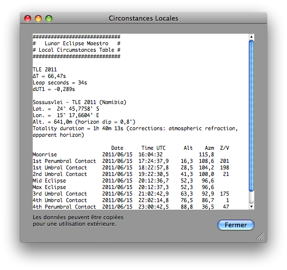

Table des Circonstances Locales
Pour visualiser, copier ou enregistrer les circonstances locales de l’éclipse dans Lunar Eclipse Maestro vous devez ouvrir la fenêtre Table Circonstances Locales.
-
Dans le menu Observateur, sélectionnez Table des circonstances locales…

-
Un menu contextuel, disponible à l’aide d’un clic droit sur les circonstances locales, vous permet d’enregistrer celles-ci dans un fichier texte.